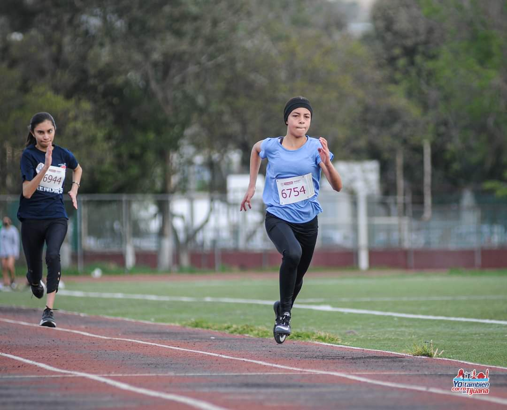
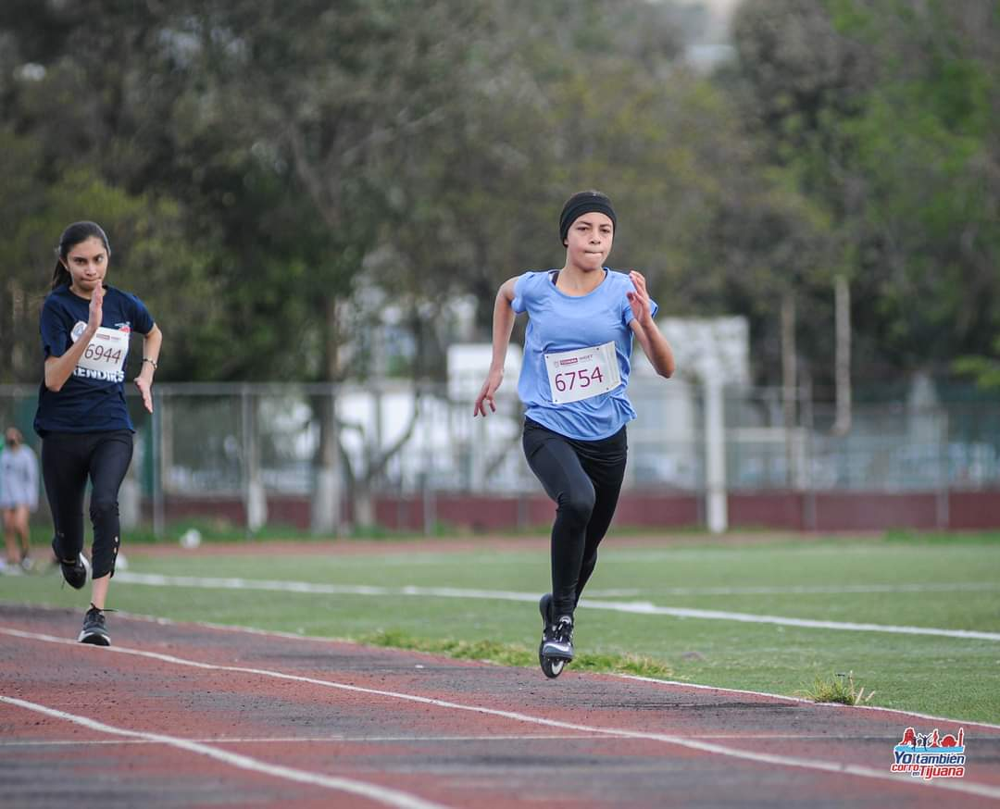

Autobiografia
- Aprender idiomas
- Mi adorado deporte, el atletismo
- Leer
- Escribir
- Ir con la psicologa
- Aprender programacion por mi cuenta
- Ver diferente la vida, desde otras persperctivas
- Ver peliculas
- Pasar tiempo con mis personas favoritas
Cosas que me gustan hacer
Esa saltadora
Me llamo Andrea Marili Gaxiola Gonzalez, naci el 17 de noviembre del 2007, en Culiacán Sinaloa, una ciudad super tranquila sin culiacanazos, he vivido una vida bastante diferente cuando estaba en Culiacán, yo estaba mucho con mi familia, jugaba tanto como una nina normal, tenia amigos, siento decir que en la escuela nunca me hubiese ido bien, en realidad era una nina normal como ya mencione, sin metas ni propositos, haciendo lo que todos hacen sin sin ningun esfuerzo, y es por eso que agradezco haber cambiado de ciudad a los ocho anos y medio, fue un cambio bastante brutal, yo no podia creerlo eran cosas diferentes, la escuela diferente, mis companeros, mis papas tenian que esforzarce mucho más por hacer unas cuantas cosas, y a pesar de que lleve siete anos y medio en Tijuana.
Aun no lo sigo creyendo, soy una nina y con todo el amor del mundo siento que he vivido toda mi vida en esta bella ciudad, es de verdad todo un sueno la persona que me he convertido. Pero todo ha costado, lagrimas, sudor, sufrimiento, cansancio, dias malos, dias buenos, paciencia, constancia, actitud, pasión, amor, golpes, fracasos, perdidas, duelos, sin duda esa es la escencia por lo que soy diferente ahora, porque todas las cosas que no queria que me pasaron en un punto, me pasaron, porque tuve que aprender a correr en contra del aire, tuve que vencer la gravedad, pero sobre todo a mi misma, a los mounstros que estan en mi mente, esos que no te dejan pensar cosas buenas y que tienes que aprender a domar sino te arrastran en la oscuridad.
Sin duda hoy estoy agradecida con la vida, me siento lo suficientemente fuerte como para superar todos los retos, equivocaciones y sufrimientos, pero sobre todo, aprendizajes que me esperan en el futuro y que he tenido en mi pasado.
Algunas de las cosas que he aprendido en Tijuana es perder el miedo a equivocarse, antes siento decir que me sentia mal y me culpaba por los errores que tenia o cometia, a que el mundo no es solo una cosa, sino que hay miles de cosas por hacer, aprender, cosas que tu no te imaginabas que existian o que pensabas que eras bueno, por ejemplo, hasta hace poco, aproximadamente unos 5 meses comence a aprender ingles, un idioma, muchas cosas nuevas, cambia tu perspectiva de la vida, del mundo, con solo un idioma, es dificil, es pura practica, es intuicion, es muchas cosas, pero lo que mas me gusta de esto es que me divierto, es un hobbie tan placentero, aparte que tiene muchos beneficios para tu cerebro, actualmente aumente mi nivel de aprendizaje de idiomas y tambien me propuse aprender aleman, con la finalidad de utilizarlo en el futuro, pero es una cosa que disfruto, que aprendi por mi cuenta, otra cosa que me gusto haber descubierto es la lectura, leer libros, es un habito muy bonito que tuve duerante la gran mayoria del año pasado, actualmente no leo demasiado porque estoy con otras cosas, pero a lo que voy que a veces te tienen que pasar cosas para que tu vida cambie, para que la puedas ver diferente.
 
